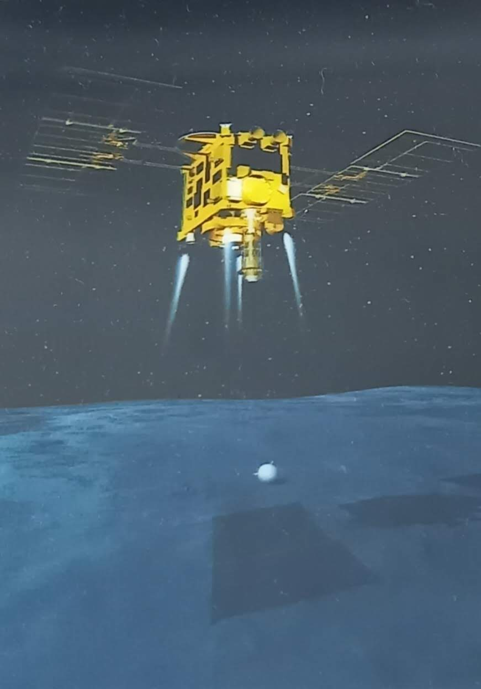
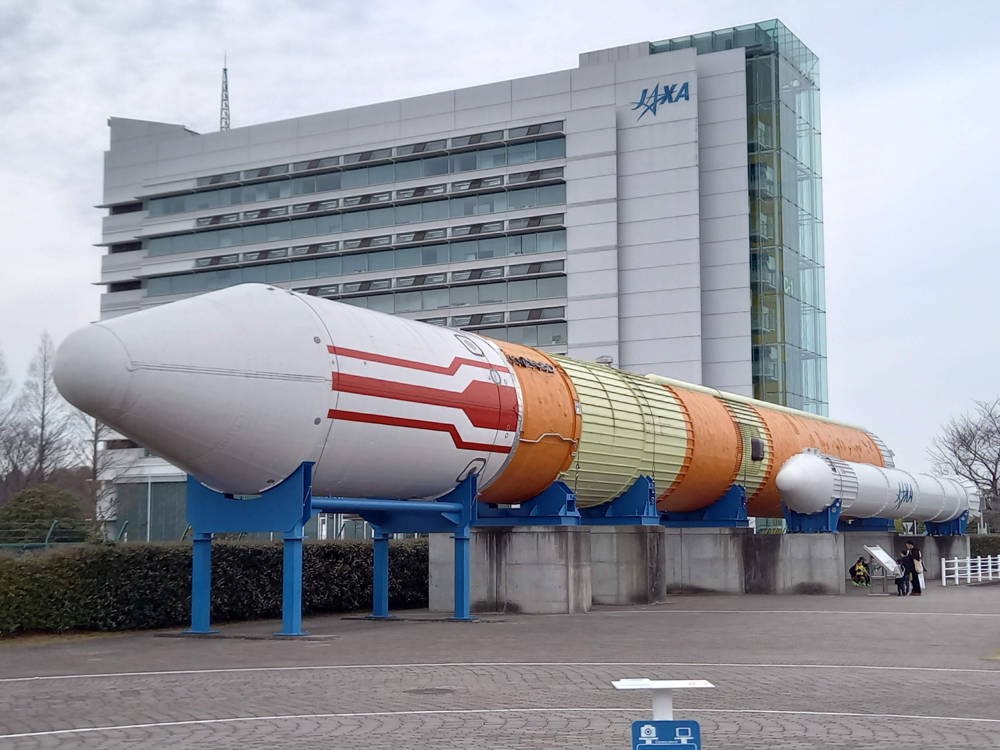
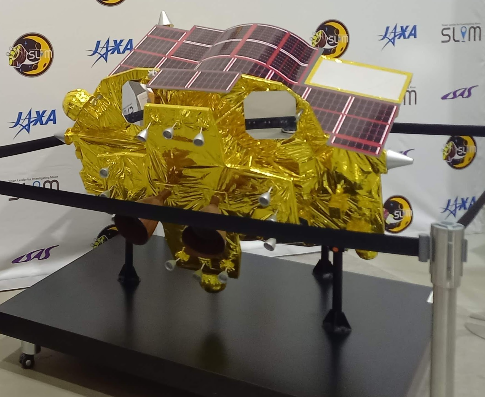

都筑大樹 / Daiki Tsuzuki
サイト工事中
About Me
東京大学大学院工学系研究科電気系工学専攻の都筑大樹です。
JAXA宇宙科学研究所で宇宙機の画像航法に関する研究を行っています。
Education
- 2025年3月 東京大学大学院 工学系研究科 電気系工学専攻 修士課程 修了予定
- 2023年3月 東海大学工学部 航空宇宙学科 航空宇宙学専攻 卒業
Work Experience
2021年11月〜 株式会社Yspace インターン
2022年12月〜2023年1月 東海大学航空宇宙学科 ティーチングアシスタント（航空宇宙学実験）
2023年4月〜 株式会社ArkEdfe Space インターン
2023年4月〜 JAXA宇宙科学研究所 リサーチアシスタント
Publications
国内学会での発表
- 都筑大樹、菊地楓、白澤秀剛、“赤外画像姿勢計(VAS-I)のフライトデータを用いた機上姿勢解析アルゴリズムの評価”、観測ロケットシンポジウム、2023、（口頭発表）
- 都筑大樹、橋本樹明、“生成画像を用いた日照条件の変化にロバストな画像航法の検討”、宇宙科学情報解析シンポジウム、2024、（口頭発表）
- 都筑大樹、澤西祐介、本橋優俊、沈彗央、水沼健人、秋山楓、三平舜、内田雄揮、“火星氷採取を目的として崖面で自立する展開型ローバの検討”、ロボティクス・メカトロニクス講演会、2024、（ポスター）
- Daiki Tsuzuki, Masahito Fujiwara, Naoya Sakatani, Takahiro Sasaki, Naoya Ozaki, Ryu Funase, Tatsuaki Hashimoto, "A Study of Comet Identification Algorithms Using Point Spread Functions", Workshop on JAXA Astrodynamics and Flight Mechanics, 2024, (Oral)
- 芦原佑樹、山本衛、石坂圭吾、熊本篤志、白澤秀剛、上垣柊季、上谷仁亮、松山実由樹、都筑大樹、坂本陽子、“S-520-32号機による電離圏擾乱発生時の電子密度鉛直・水平構造観測”、観測ロケットシンポジウム、2023、（口頭発表）
- 西川裕二、岡部龍哉、松田雄馬、都筑大樹、酒見議一、岩崎祥大、“人―機械介在マルチエージェントシミュレーションを用いた宇宙機信頼性に関する検討”、宇宙科学技術連合講演会、2023、（口頭発表）
- Knill Maximilian, Daiki Tsuzuki, Tatsuaki Hashimoto, "Robust Vision-Based Terrain-Relative Localization for Lunar Landings", Workshop on JAXA Astrodynamics and Flight Mechanics, 2024, (Oral)
Awards
- 東海大学 松前重義記念基金 学部奨学金（2種）
Skills
- 英語（TOEFL iBT 77/120）
- ドイツ語（Goethe-Zertifikat A1）
- プログラミング（Python, C/C++, C#, MATLAB, etc.）
- コンピューターサイエンス（応用情報技術者）
- 無線通信（第一級陸上無線技術士）
Activities
- 観測ロケットS-520-32号機 VAS班およびGA・MAS班
- JAXA宇宙科学人材育成プログラム
- 6U CubeSat AOCS開発
- Comet Interceptor Probe B GNCチーム